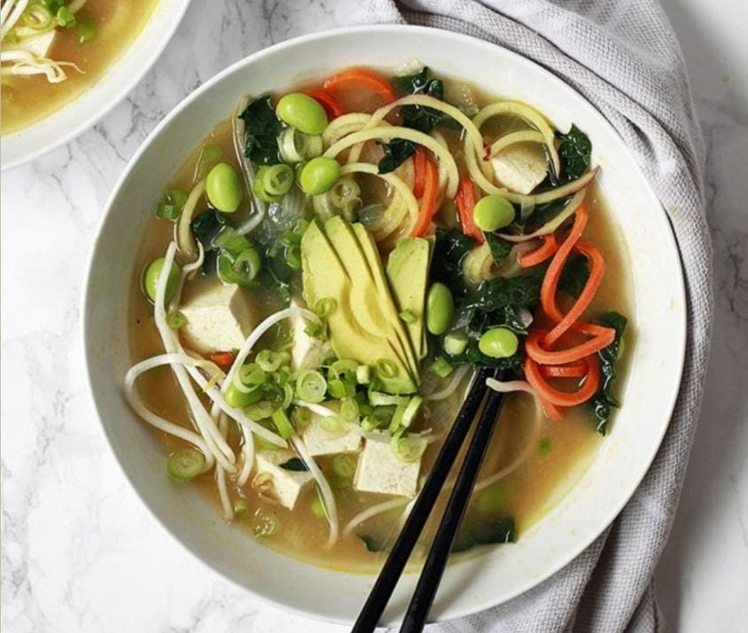

Miso Soup
Home
Miso soup (味噌汁, misoshiru) is a traditional Japanese soup consisting of a dashi stock into which softened miso paste is mixed. In addition, there are many optional ingredients (various vegetables, tofu, abura-age, etc.) that may be added depending on regional and seasonal recipes, and personal preference.
In Japanese food culture, Miso soup is a representative of soup dishes served with rice. Miso soup is also called omiotsuke (御味御付). Along with suimono (clear soup seasoned with a small amount of soy sauce and salt in a dashi stock), miso soup is considered to be one of the two basic soup types of Japanese cuisine.

Ingredients
4 cups water
2 teaspoons dashi granules
3 tablespoons miso paste
1 (8 ounce) package silken tofu, diced
2 green onions
Nutrition Facts
Calories 100g
Total Fat 5.0g
Cholesterol 250mg
Sodium 450.0mg
Total Carbohydrate 11.0g
Vitamin C 10%
Vitamin A 6%
Procedure
Combine water and dashi granules in a medium saucepan over medium-high heat; bring to a boil.
Reduce heat to medium and whisk in miso paste
Stir in tofu.
Separate the layers of green onions, and add them to the soup.
Simmer gently for 2 to 3 minutes before serving.
Expert Guide
Back ←
Scroll to Top ↑